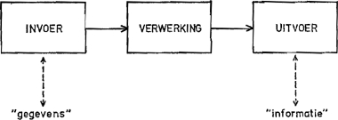

Invoer, Verwerking & Uitvoer
Het IVU-model: hoe elke computer informatie ontvangt, berekent en laat zien.
⬅ Terug naar Hoofdpagina
🔄 Het IVU-Model (Input - Processing - Output)
Elke computer, spelcomputer of smartphone werkt volgens een vast basisprincipe: het IVU-model (Invoer, Verwerking, Uitvoer). Data komt de computer binnen, de computer verwerkt en berekent deze data, en vervolgens wordt het resultaat getoond of uitgevoerd.
⌨️ Invoer (Input)
🧠 Verwerking (Processing)
🖥️ Uitvoer (Output)
💾 Opslag (Storage)
⚙️ De Drie Drie Stappen Uitgelegd
⌨️
1. Invoer (Input):
Informatie of opdrachten die jij aan de computer geeft. Voorbeelden: een toets indrukken op je toetsenbord, klikken met je muis, een controller-knop inbrengen of praten in een microfoon.
Informatie of opdrachten die jij aan de computer geeft. Voorbeelden: een toets indrukken op je toetsenbord, klikken met je muis, een controller-knop inbrengen of praten in een microfoon.
⚙️
2. Verwerking (Processing):
De processor (CPU) en het werkgeheugen (RAM) rekenen de ingevoerde gegevens om naar acties en enen en nullen. Hier
De processor (CPU) en het werkgeheugen (RAM) rekenen de ingevoerde gegevens om naar acties en enen en nullen. Hier